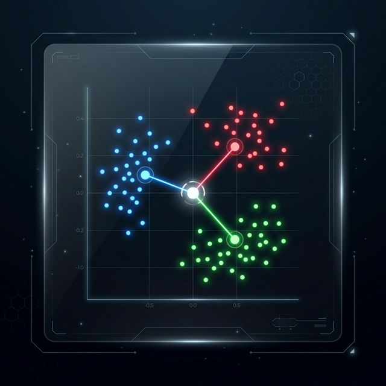
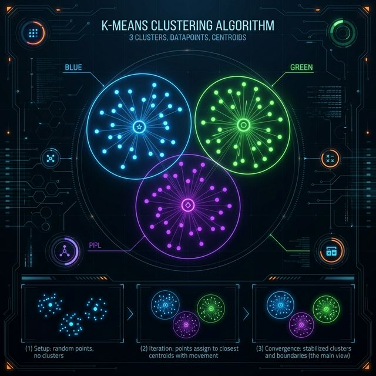
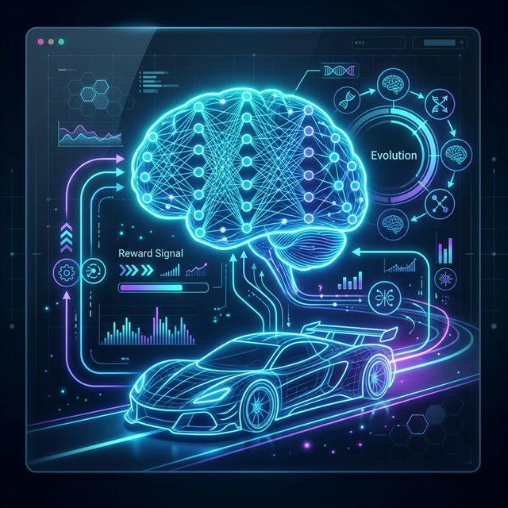

Sketch-Guess Game
Draw a basic shape (Circle, Square, Triangle). The neural network will guess it in real-time.
Supervised Learning

K-Nearest Neighbors (KNN)
This algorithm learns strictly from labeled examples (the training data). When you draw a shape, your strokes are converted into an 8x8 pixel-density grid, creating a complex mathematical vector.
How it Classifies
- Feature Extraction: Converts your drawing into quantifiable numbers.
- Euclidean Distance: The AI measures the mathematical distance between your drawing and the stored templates.
- Neighbor Voting: The algorithm finds the closest (most similar) K templates. They vote on what shape you drew!
Deep Dive: The Math Behind the Magic
K-Nearest Neighbors is incredibly elegant because it involves almost zero "training process". Unlike Deep Learning where weights slowly adjust over thousands of iterations, KNN simply memorizes the entire dataset. When a new point arrives, it computes the Pythagorean distance (Euclidean metric) to every single known point in multi-dimensional space. The top 'K' closest points cast a democratic vote to decide the class. Choosing the right value for 'K' is crucial: setting K=1 makes it highly sensitive to noise, whereas a huge K value blurs the boundaries completely.
Confidence Levels
Cluster Constellations
Click on the space canvas to add stars. Watch the K-Means algorithm group them automatically.
Unsupervised Learning

K-Means Clustering
Unlike supervised learning, K-Means operates on entirely unlabelled data. It seeks to autonomously discover hidden structures and groupings in pure chaos.
The Algorithm Steps
- Initialization: Randomly drops 'K' number of centroids into the data space.
- Assignment: Every star belongs to whichever centroid is geometrically closest to it.
- Optimization: Centroids move to the exact center (average) of their assigned stars.
- Convergence: Repeats until the clusters stop shifting!
Deep Dive: Uncovering Hidden Patterns
K-Means excels at pattern recognition when we don't know what we're looking for. It minimizes the 'variance' within clusters over successive iterations. However, it requires you to assume 'K' (the number of groups) in advance. It's highly sensitive to its initial random placement (this is why running it twice on the same data might look slightly different) and assumes clusters are relatively spherical. It's widely used in customer segmentation, fraud detection, and image color compression.
F1 Race Evolution
Observe a population of cars using Genetic Algorithms & Neural Networks to learn how to drive.
Reinforcement Learning

Neuro-Evolution
Instead of learning from data, these AI Agents learn from their environment through trial, error, and natural selection.
The Evolution Loop
- Perception: 5 raycast sensors act as "eyes," measuring distances to the track boundaries.
- The Brain: A Feed-Forward Neural Network processes these sensor inputs to determine steering and acceleration.
- Fitness: Cars are evaluated! The further a car travels before crashing, the higher its score.
- Reproduction: The top 10% are selected to breed. Their brain's weights undergo a 5% random mutation for the next generation.
Deep Dive: Genetic Algorithms & Neural Nets
We are merging Neural Networks with Darwinian Evolution. Our "Brain" operates via matrix math, multiplying 5 sensor inputs with 8 hidden neuron weights to decide on steering angles. But instead of Backpropagation (which requires correct answers to calculate error), we cannot tell a car *exactly* how to turn. Instead, we let Biological Evolution take the wheel. If a car drives well (High Fitness), we copy its brain matrix verbatim. We randomly alter (mutate) 5% of its numbers and throw its offspring back onto the track. Eventually, the matrix converges purely because of survival of the fittest!
Neural Network Brain
Inputs: 5 Raycast Sensors
Hidden: 8 Neurons
Outputs: Steering, Acceleration
Mutation Rate: 5%
Population: 50 Cars